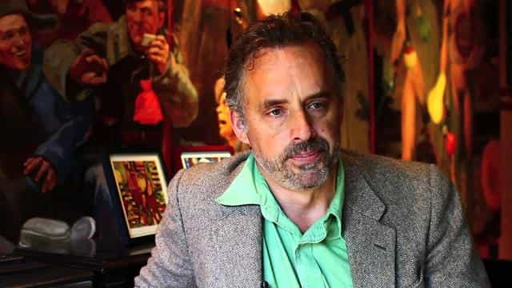

< < < Back
4 Powerful Quotes From The Professor Who Stood Up Against Deranged Leftists – Return Of Kings
There’s a man by the name of Jordan B. Peterson who everyone here should know of. He is currently a professor at the University of Toronto, one of the most liberal colleges on the face of the earth.
He’s been the center of a controversy over the past year, due to his refusal to use the ridiculous “Xim/Xer” pronouns. The university board threatened to fire him, but he stood strong—and so far, it seems that he’s won the battle. He’s kept his job and students of his have proclaimed that he’s changed their lives for the better.
But the impact of Dr. Peterson goes far deeper than most realize—his refusal to bend over to politically-correct leftist ideology has cemented his place as a leader in this new crusade against language-policing. Most importantly, however, he has given us hope.
I have watched countless hours of his lectures (they’re all on YouTube), and I can say, without a doubt, that he is red-pilling the new generation. For every student that he un-brainwashes, a small, yet integral battle has been won in this massive culture war.
I was first exposed to him on Joe Rogan’s podcast, the Joe Rogan Experience #877, and was completely blown away, not only by his profound knowledge of psychology, culture, and spirituality, but by his incredible command of the English language, and his ability to communicate complex ideas.
If you haven’t watched the interview already, I highly urge you to do so—it’s nearly 3 hours long, and every single one of these quotes will be pulled from this masterpiece. Here we go:
1. How Things Get To Terrible Places

“Things get to terrible places, one tiny step at a time. If I encroach on you, and I’m sophisticated about it, I’m going to encroach 2 millimeters. I’m going to encroach right to the point where you start to protest, then I’m going to stop. Then I’m going to wait. Then you’re going to calm down. Then I’m going to encroach again, right to the point where you protest, then I’m going to stop. Then I’m going to wait..and I’m just going to keep doing this, and before you know it, you’re going to be back 3 miles from where you started.”
This is, in its essence, how the left operates, and it’s why Dr. Peterson has decided to take a stand against the encroachment of their language policing. He understands that terrible things do not happen over night—they take years to happen, but like slowly boiling a frog in a pot of water, by the time people wake up, it’s too late.
First it’s “hate speech,” because nobody wants to be mean, right? Then it’s calling people by their made up pronouns, because you don’t want to be mean, right? Then, before you know it, you can’t even critique the “Religion of Peace,” even if they’re bombing your bloody city.
This is how the left operates, and we must understand this—men need to take a stand, and stop acting like little bitches. Who cares if people call you mean names? Do you have any idea how much WORSE the alternative is? The alternative is we live in an Orwellian nightmare, where every thought is subject to censorship and imprisonment, and we desperately do not want this to happen.
2. Religion As The Foundation Of Society

“Even the fundamentalists have the wrong idea about religious truth. Religious truth is not scientific truth. The stories in Genesis, which are very old stories, maybe tens of thousands of years old—they’re obviously not scientific theories, because the people who wrote them weren’t scientists…these stories, they come up everywhere, there’s no avoiding them, and it’s because they’re true, but they’re not true like scientific truths. They’re a behavioral truth, or a pragmatic truth, or a dramatic truth—and part of the reason why our society is so damn unstable now, and part of the reason why all of this weird chaos is emerging…this is a consequence of Nietzsche’s observation back in the late 1800’s about the death of God. We blew the metaphysical foundations out from underneath our culture, and the whole thing is shaking and twisting.”
As a philosophy major, and a well-educated one at that, nothing irritates me more than these pseudo-intellectuals who try to attack religion as if they’re an 8th grader who just discovered Richard Dawkins.
The damn fools treat religion as if it’s some sort of scientific truth, but it’s not. Rather, it’s a collection of stories that resonate on a deeply profound level—stories that transcend culture and time, and that speak to us on the level of the soul, or the collective unconscious.
This is why you see the same damn stories appear, everywhere you go—the evil snake, the redemptive phoenix, going down into the underworld…they’re all archetypes that portray critical aspects of the human experience, similar to the Hero’s Journey of Modern Men.
The reason why we’re experiencing such an incredible amount of chaos and insanity nowadays, is because the foundations of our culture have been blown to smithereens. Previously the church taught us culture—it taught us morals, it taught us the value of family life, it taught us how to act, and what virtues to aspire towards. It gave meaning to a meaningless existence.
But now? Religion has been replaced with “critical theory,” the dangerous Marxist tenet that everything is equal and that no truth is objective… and we’re paying the price for it.
3. Why People Buy Into Leftist Ideology

“The advantage to me being an ideologue, is that I can explain everything, I can feel morally superior, and I know who my enemies are…ideologies give you a one bit answer to everything. Why do men and women’s salaries differ? Oppression—it’s always the same thing, and it makes you feel like you know something, and people like that. They don’t like the feeling that there’s something they don’t know.”
As any man of ROK knows, education is a lifelong process. It is not something that you can attain by simply reading a book and watching a few documentaries—finding the truth, or building a “high resolution map,” of reality, as Jordan B. Peterson calls it, takes an incredible amount of time and effort.
This is why leftist ideology is so attractive to the uneducated… they don’t want to think that they’re uneducated! They don’t want to actually do the work, and read the books, and pour through the statistics, they’d rather have a drastically over-simplified answer to EVERYTHING, because it saves them time and effort.
Why are more men in power? Oppression. Why do African Americans commit crime at a rate that’s 25x higher than Caucasians? Racism. Why do women earn less than men? Sexism.
Discovering the truth is an incredibly difficult process. Hell, I’ve read more profound, life-changing books than probably 95% of people out there, and I still don’t feel like I have a good grasp on the vast majority of issues. Leftists don’t like that, though.
At the root of their ideology is arrogance—they want to believe that they know everything, and can explain everything. Leftism is, therefore, a pathological disorder more so than it is a political stance. It’s an extremist, dogmatic ideology, rather than a logical opinion.
4. Colleges Are Saturated With Leftism

“Even with the free speech debate that the University of Toronto hosted…they did 3 politically correct things during the debate. The University opened up by noting that the land on which we were having the debate was once property owned by the original Native Americans…the next thing that happened was they announced that there would be counselors waiting outside for anyone who was too traumatized by the contents of the discussion. They closed by announcing the trans day of remembrance…and the reason I’m pointing this out, is it just shows you that the fact that these things happened…that’s how saturated the Universities are with this kind of thinking.”
Anyone who’s been to a college, or has been keeping up with Milo or Ben Shapiro’s tours lately, is aware of just how saturated the Universities are with this type of thinking. I was recently at a relatively large college with 25,000 people on the East Coast, and I was stunned at how loaded the entire environment was.
Everywhere I went, there were propaganda posters about toxic masculinity, consensual sex is rape, white men are oppressing everyone…it’s absolutely mind-boggling to me that more people haven’t spoken up or dropped out altogether.
What’s crazy too, is that the damn kooks in charge of things don’t even realize what they’re doing is insane—they’re so used to living in their gated communities, studying in their ivory towers, and only associating with Leftists, that they actually think it’s normal to view reality this way.
This is how delusional our so called “teachers,” have become and, as Mr. Peterson, an ex-Harvard professor said, the Universities now do more harm than they do good.
Summary
I hope that the men of ROK have gleaned some gems of wisdom from this article—if you’re interested, you can watch the whole interview above. I can personally think of no better way to spend your afternoon, than to listen to this podcast.
If you’re interested in further supporting this man, which I highly urge you to do so that the left realizes what they’re up against, you can subscribe to his YouTube channel or take one of his online self-improvement courses. I’ve personally taken his “Past Authoring,” and “Future Authoring,” courses, and found both to be highly elucidating.
All in all, there’s a reason why people call leftism cancer—because it spreads and grows, unless you do something to stop it. It encroaches, step by step, inch by inch, until it’s too late to be undone…and I hope, for the sake of the West, that it isn’t too late to be undone.
Read More: Florida Medical Students To Receive Important Training In LGBT Pronouns